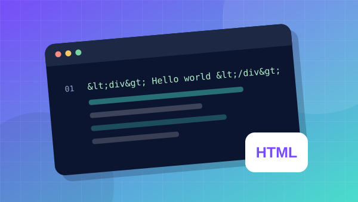

Escolha seu caminho
Frontend, backend ou fundamentos: comece no ponto certo.
Aprenda a criar sites, aplicações e projetos reais. Conteúdos diretos, exemplos práticos e um passo de cada vez.
TRILHAS DE APRENDIZADO
Comece pelo básico ou descubra uma nova tecnologia. Cada trilha tem um desafio para colocar a mão no código.
COMO APRENDER AQUI
Conhecimento que faz sentido quando você vê o resultado no navegador.
Ver conteúdos gratuitosFrontend, backend ou fundamentos: comece no ponto certo.
Conceitos explicados sem complicar o que pode ser simples.
Reforce o aprendizado com pequenos projetos.
Temos um pequeno experimento visual inspirado na nCage+: algumas imagens deste site podem aparecer como Nicolas Cage, começando em 1% e aumentando 1 ponto percentual a cada dia.
O efeito do site é opcional e local. A extensão funciona em outros sites somente após instalação e configuração no Chrome.
